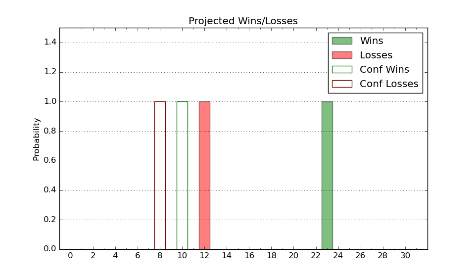

| Home | Game Probabilities | Conferences | Preseason Predictions | Odds Charts | NCAA Tournament |
| City: | Richmond, Virginia | |
| Conference: | Atlantic 10 (6th)
| |
| Record: | 10-8 (Conf) 23-12 (Overall) | |
| Ratings: | Comp.: 9.5 (92nd) Net: 9.5 (92nd) Off: 108.5 (67th) Def: 99.0 (125th) SoR: 21.3 (73rd) |
| Remaining | ||||||
|---|---|---|---|---|---|---|
| Date | Opponent | Win Prob | Pred. | |||
| 3/17 | (N) Iowa (13) | 17.0% | L 72-84 | |||
| Previous | Game Score | |||||
| Date | Opponent | Win Prob | Result | Off | Def | Net |
| 11/9 | North Carolina Central (299) | 94.0% | W 70-60 | -14.7 | -0.0 | -14.7 |
| 11/12 | (N) Utah St. (51) | 36.8% | L 74-85 | 6.3 | -16.8 | -10.5 |
| 11/16 | Georgia St. (178) | 83.7% | W 94-78 | 20.4 | -9.7 | 10.7 |
| 11/20 | @Drake (81) | 31.7% | L 70-73 | -0.4 | 2.7 | 2.3 |
| 11/22 | Hofstra (126) | 76.1% | W 81-68 | 10.7 | -3.6 | 7.1 |
| 11/25 | (N) Maryland (80) | 45.7% | L 80-86 | -4.0 | -7.1 | -11.1 |
| 11/27 | (N) Mississippi St. (52) | 37.0% | L 71-82 | -2.2 | -11.9 | -14.1 |
| 12/1 | @Wofford (105) | 41.9% | W 73-64 | 15.9 | 7.6 | 23.5 |
| 12/5 | @Northern Iowa (99) | 38.8% | W 60-52 | -14.0 | 30.4 | 16.4 |
| 12/11 | Toledo (89) | 63.3% | W 72-69 | -6.6 | 2.4 | -4.2 |
| 12/17 | (N) North Carolina St. (151) | 69.0% | W 83-74 | 2.2 | 0.6 | 2.9 |
| 12/19 | Old Dominion (210) | 86.7% | W 67-61 | -4.4 | 0.8 | -3.6 |
| 12/22 | Bucknell (340) | 97.0% | W 81-50 | -7.1 | 17.1 | 10.0 |
| 12/30 | Saint Joseph's (190) | 84.9% | L 56-83 | -35.2 | -15.1 | -50.3 |
| 1/2 | @Saint Louis (67) | 28.7% | L 69-76 | -4.6 | 8.3 | 3.7 |
| 1/5 | Massachusetts (176) | 83.6% | W 80-72 | -9.0 | 3.4 | -5.6 |
| 1/14 | Davidson (44) | 50.3% | L 84-87 | 12.0 | -19.8 | -7.8 |
| 1/18 | @Fordham (171) | 58.5% | W 83-70 | 19.0 | -4.5 | 14.6 |
| 1/22 | @La Salle (232) | 70.7% | W 64-56 | -8.8 | 12.4 | 3.6 |
| 1/25 | @Rhode Island (136) | 50.6% | W 70-63 | 2.9 | 5.0 | 7.9 |
| 1/29 | VCU (60) | 55.4% | L 62-64 | -5.0 | -1.8 | -6.7 |
| 2/1 | @Duquesne (277) | 78.9% | W 74-57 | 8.7 | 2.2 | 10.8 |
| 2/4 | St. Bonaventure (87) | 63.1% | W 71-61 | 8.6 | 4.7 | 13.3 |
| 2/7 | George Mason (107) | 71.2% | W 62-59 | -9.4 | 6.0 | -3.4 |
| 2/9 | @George Mason (107) | 42.1% | L 84-87 | 5.9 | -12.4 | -6.5 |
| 2/12 | La Salle (232) | 89.1% | W 77-63 | 2.7 | -4.4 | -1.7 |
| 2/18 | @VCU (60) | 26.7% | L 57-77 | 1.0 | -18.8 | -17.8 |
| 2/22 | @George Washington (229) | 70.0% | W 84-71 | 18.3 | -10.4 | 7.9 |
| 2/25 | Saint Louis (67) | 57.9% | W 68-66 | 6.2 | 0.2 | 6.5 |
| 3/1 | Dayton (61) | 55.8% | L 53-55 | -23.4 | 18.9 | -4.5 |
| 3/4 | @St. Bonaventure (87) | 33.4% | L 65-72 | 1.5 | -8.2 | -6.6 |
| 3/10 | (N) Rhode Island (136) | 65.4% | W 64-59 | -7.2 | 10.7 | 3.6 |
| 3/11 | (N) VCU (60) | 40.2% | W 75-64 | 19.1 | -0.3 | 18.8 |
| 3/12 | (N) Dayton (61) | 40.6% | W 68-64 | 3.3 | 3.3 | 6.6 |
| 3/13 | (N) Davidson (44) | 35.4% | W 64-62 | -9.9 | 15.4 | 5.5 |
| Stats & Trends | |||||
|---|---|---|---|---|---|
| Current | Day | Week | Month | Season | |
| Composite | 9.5 | +0.1 | +0.0 | -0.2 | -11.4 |
| Comp Rank | 92 | -- | -- | -4 | -61 |
| Net Efficiency | 9.5 | +0.1 | +0.0 | -0.1 | -- |
| Net Rank | 92 | -- | -- | -5 | -- |
| Off Efficiency | 108.5 | -0.3 | -1.1 | -0.5 | -- |
| Off Rank | 67 | -3 | +2 | +3 | -- |
| Def Efficiency | 99.0 | +0.4 | +1.1 | +0.4 | -- |
| Def Rank | 125 | +7 | -3 | -2 | -- |
| SoS Rank | 87 | +4 | +3 | -4 | -- |
| Exp. Wins | 23.0 | +1.0 | +4.0 | +3.6 | +0.6 |
| Exp. Conf Wins | 10.0 | -- | -- | -0.4 | -2.8 |
| Conf Champ Prob | 0.0 | -- | -- | -0.1 | -30.7 |

| Advanced Stats | ||
|---|---|---|
| Stat | Value | Rank |
| Off Eff FG % | 0.530 | 73 |
| Off Ast Ratio | 0.167 | 38 |
| Off ORB% | 0.214 | 312 |
| Off TO Rate | 0.121 | 8 |
| Off FT Ratio | 0.325 | 123 |
| Def Eff FG % | 0.491 | 139 |
| Def Ast Ratio | 0.133 | 118 |
| Def ORB% | 0.255 | 148 |
| Def TO Rate | 0.163 | 127 |
| Def FT Ratio | 0.225 | 19 |